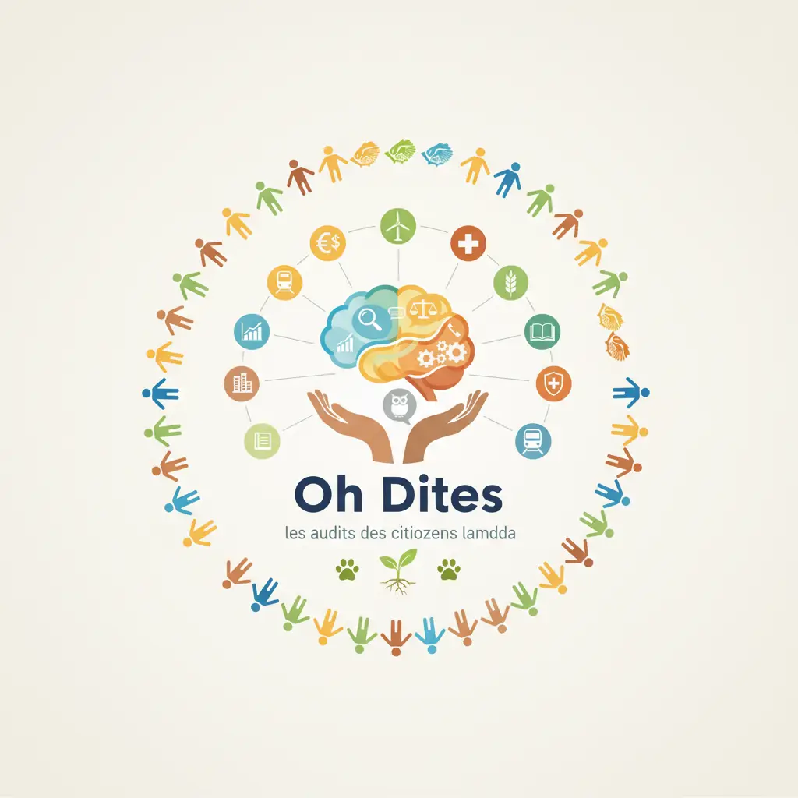

Comprendre avant de conclure.[cite: 1]
L’association ne vise pas à juger ou convaincre : elle vise à documenter factuellement ce qui est, afin que chacun puisse décider librement.[cite: 1, 3]

Les audits des citoyens lambda
L’association ne vise pas à juger ou convaincre : elle vise à documenter factuellement ce qui est, afin que chacun puisse décider librement.[cite: 1, 3]

Les audits des citoyens lambda